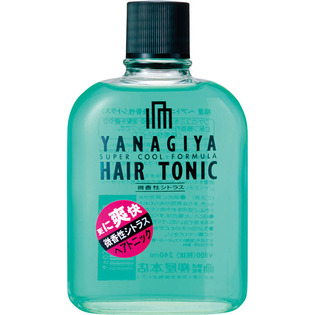

返回列表
产品名称：柳屋 ヘアトニック＜微香性シトラス＞

柳屋本店 柳屋 ヘアトニック＜微香性シトラス＞ ２４０ｍｌ
メーカー 柳屋本店
JANコード 4903018113600
商品の特徴
頭皮を超爽快に保つ、クールタイプヘアトニックです。香りはフレグランス系シトラスの微香性です。香りで一歩差がつきます。
成分・分量
エタノール、水、BG、メントール、酢酸トコフェロール、カンフル、パンテノール、PEG-40水添ヒマシ油、クエン酸、EDTA-4Na、香料、青1、黄203
用法及び用量
洗髪後の清潔な頭皮に適量をふりかけ、指の腹で全体を軽くマッサージしてください。